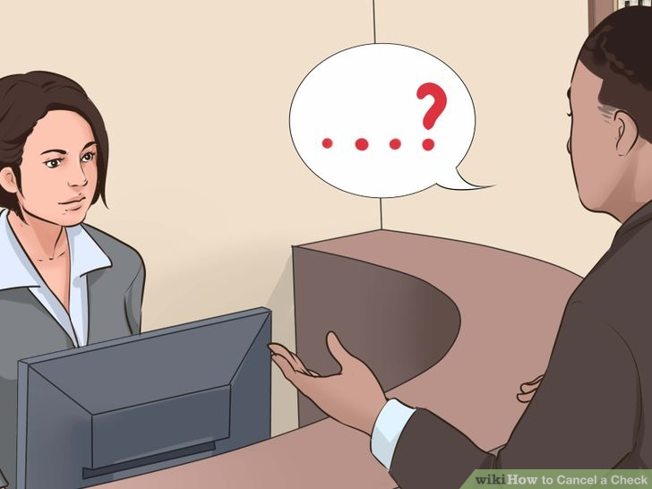
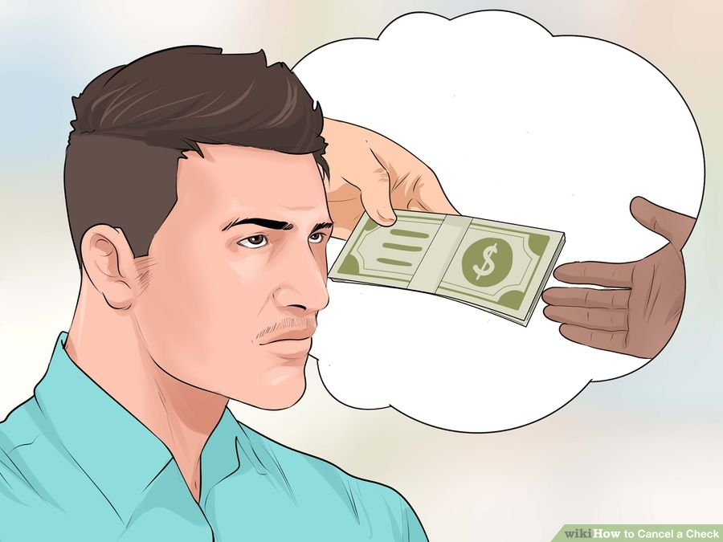
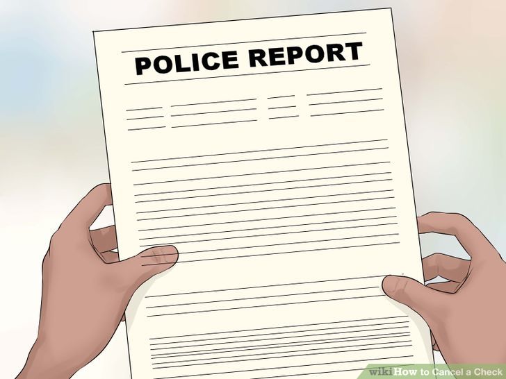
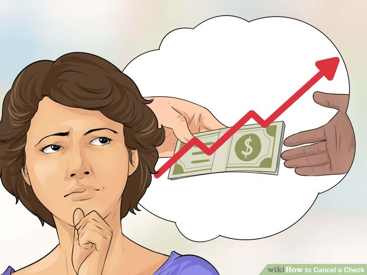
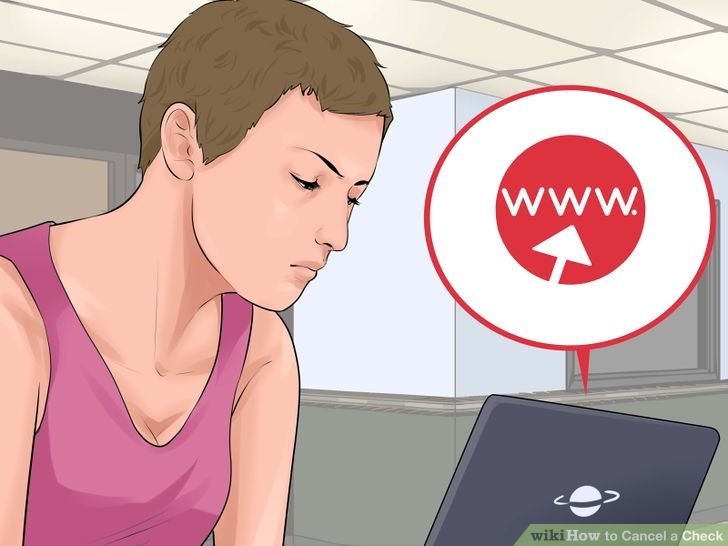
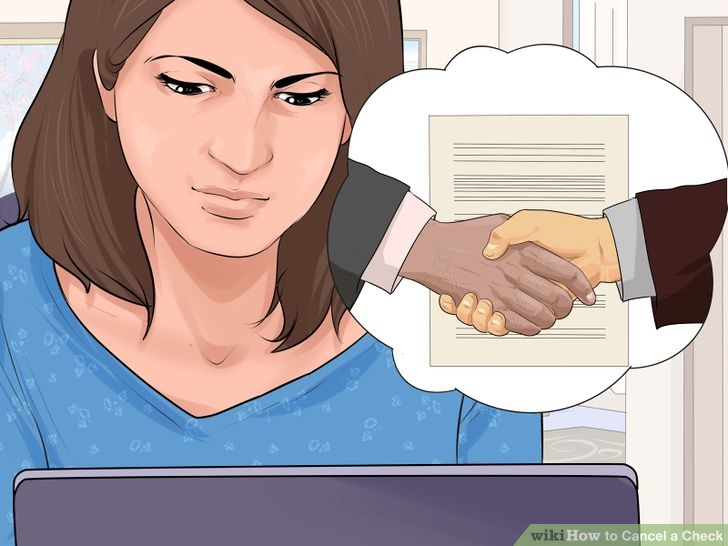
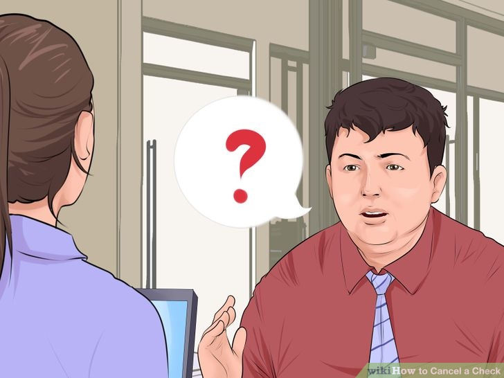
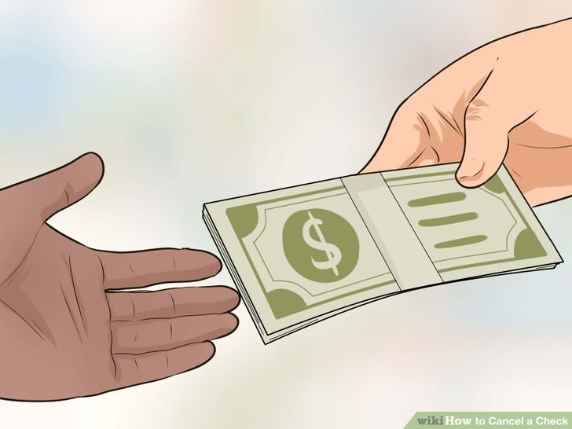

There can be any number of reasons to want to stop payment on a check. Stopping the payment on a check means canceling the check so it will not be paid. This process can be very simple if you follow a few easy steps.
1.Gather needed information. To cancel a check, you must have the legal authority to do so either as an owner of the account or as a legally recognized agent. You will also need certain information to make a cancellation request with your bank:You need the name or names of the owners of the account on which the check was written. This includes all names on a joint or company account.You will also need your phone number and the address as it appears on the check.Make sure you write down the account number on which the check was drawn, the check number, and the date written on the check.You also need to have the amount for which the check was written and the name of the party to whom the check was made payable.Your bank will also ask you the reason for the stop payment request, so make sure you know why.[1]
2.Verify payment status. Check with the bank to see if the check has cleared. This means that the person you wrote the check to has been paid the amount it was written for. You can ask the person or company that it was issued to. You should also verify the status of the check with your bank. This can be done over the phone or online. You cannot cancel a check that has already been paid.
3.Consider the cost. There is usually a charge for the service, regardless of whether payment is actually stopped or not. [2] This varies from bank to bank. Depending upon your relationship with the financial institution, fees may not be required or will be forgiven. If you know there will be a fee, you may not want to place a stop payment because of the extra cost. If a check is worth less than the amount of the fee, let the payment go through. If you receive an overdraft fee, it is about the same price as a stop payment fee at most banks.Be aware that overdraft fees can be incurred again and again if the money is not replaced.[3] 
4.Deal with stolen checks. There is no fee for placing a stop payment on lost or stolen blank checks. If your check book is stolen, get a police report right away. This is especially needed if there was more than one check stolen. Then take the report to the bank at the branch where you do business. You may want to consider closing the account and opening another one. •If you want to close your account, the bank will have a manager or a loss-prevention specialist to help you. They can flag your account for special care. They can also help you to transition to a new account as necessary. [4]
5.Deal with an unstopped payment. You may not always be able to put a stop payment on a check. It also may not always be convenient to do so. A stop payment cannot be processed if you paid with a cashier’s checks or if the check has already been paid. It also cannot go through if there was not enough time to process the request. If you can't cancel the check, try contacting the payee directly. Request that they do not deposit the check or to arrange for reimbursement in another form.[ [4]
1.Gather needed information. Once you have all the necessary information, you need to contact your bank, credit union, or savings and loan. You then need to request a cancellation. This can usually be done in by phone or in person in the branch. Make sure you have all the information handy. You don't have to be the person who signed the check, but your name needs to be on the account. •Save your time and theirs by preparing first.The average amount to cancel a check at the bank is $30 to $35. Check with your bank to find the exact amount you will have to pay.You shouldn't have a problem stopping payment. The bank is obligated to take the request regardless of the reason you give. They usually just want to know if they need to be on the lookout for fraud.[6]
2.Handle the situation online. If possible, placing a stop payment online can be easier, faster and cheaper than doing so in person. You can do this through your online banking website. Since your bank already has most of your information attached to your account, it is much easier than trying to do it in person. You should confirm the account number the check was drawn on. You then have to enter the check number, the amount it was written for, who it was written to, and the date written on the check. •This option may result in fees $5-$10 lower than in person.You can typically find this option from your online banking homepage. If you cannot find it, enter "Stop Payment” in the search box and follow the links to “Request Stop Payment.” Then you can enter the above information. [7]
3.Take care of other transactions. You can stop payments on other types of activity on your account other than written checks. Holds can be placed on pre-authorized debits or electronic checks using the same procedures. You just need different information. You will need to know the company name, account number, amount of the transfer, and the Automated Clearing House Merchant ID. You can use the company ID instead. Both of these numbers can be found by looking at the last transaction you had with the company. •You will need to do this 3 business days before the payment is due. This allows time for the cancellation to be processed.A computer in responsible for taking care of this process. This means that the information needs to be complete and correct. There will not be a person there to figure out the missing information.[8] 
4.Determine the timeline. It is important to ask your bank when the stop payment will take effect. This can be immediately, within 24 hours, or at the end of the next business day. It depends on your bank and the situation. You should also ask how long it stays in effect. Banks will generally get rid of stop payments from the system after 6 months. This can vary. [8] 
3.Deal with the Payee. Now that the check is cancelled, you need find other way to arrange payment. Depending on the reason for canceling the check, you may want to make other arrangements with payee of the check. You will probably want to request that the check be returned to you in most cases. You know that stop payment will not remain in effect forever. Getting the check back will make it impossible for it to be cashed once the time period has ended. With this, you avoid having to place a new stop payment again in the future. That means you will not have the cost and hassle again. [8]